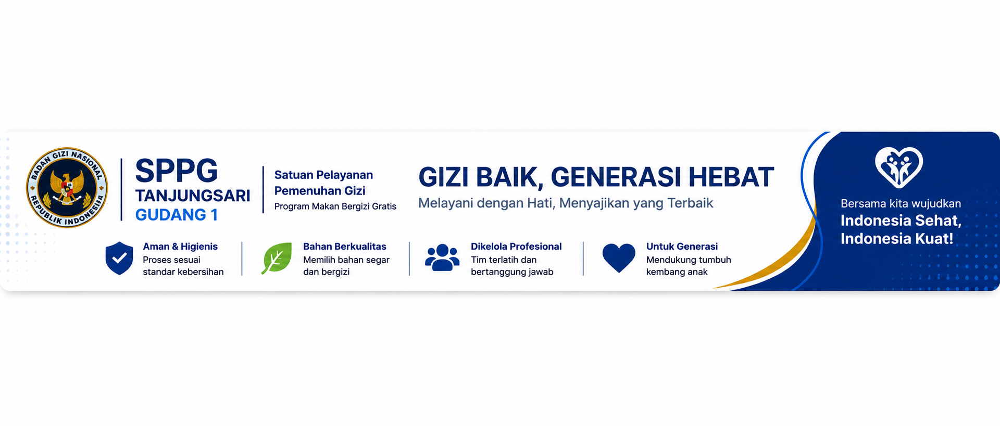

FOTO MENU
Menu Makanan
Dokumentasi menu makanan bergizi yang disajikan oleh SPPG Tanjungsari.



Proses pengolahan makanan memperhatikan standar kebersihan dan keamanan pangan.
Menggunakan bahan makanan yang segar, berkualitas dan bergizi.
Didukung oleh tim yang terlatih, bertanggung jawab dan profesional.
Mendukung pemenuhan gizi dan tumbuh kembang generasi Indonesia.
Satuan Pelayanan Pemenuhan Gizi Program Makan Bergizi Gratis.
SPPG Tanjungsari Gudang 1 merupakan satuan pelayanan yang mendukung penyediaan makanan bergizi bagi penerima manfaat Program Makan Bergizi Gratis.
Kami berkomitmen menjaga kualitas, kebersihan, keamanan pangan serta proses pelayanan yang bertanggung jawab.
Berbagai kegiatan dalam proses pelayanan dan penyediaan makanan bergizi.
Pemilihan dan persiapan bahan makanan sebelum proses pengolahan.
Proses pengolahan makanan dengan memperhatikan kebersihan dan keamanan.
Makanan dikemas dengan rapi sebelum didistribusikan kepada penerima manfaat.
Makanan siap didistribusikan sesuai dengan jadwal pelayanan.
Dokumentasi menu makanan bergizi yang disajikan oleh SPPG Tanjungsari.
Dokumentasi kegiatan SPPG Tanjungsari Gudang 1.
Untuk informasi lebih lanjut mengenai kegiatan dan pelayanan SPPG Tanjungsari, silakan hubungi kami.
SPPG Tanjungsari Gudang 1
Hubungi melalui WhatsApp